Maine Lobster Trip
September 2010

In September 2010 I traveled to Maine for lobster country.
Stops included the Fort Edgecomb blockhouse and plaques, a harbor and boat day along the rocky coast, a green drawbridge, and a tray of cooked lobsters at the end.

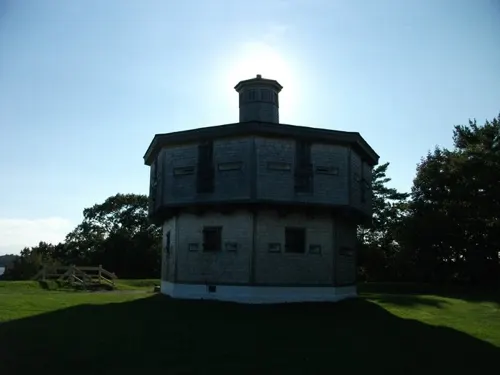

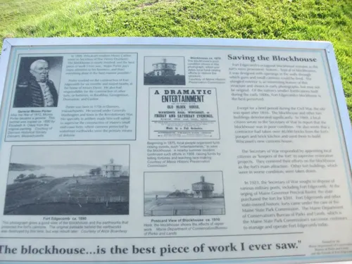

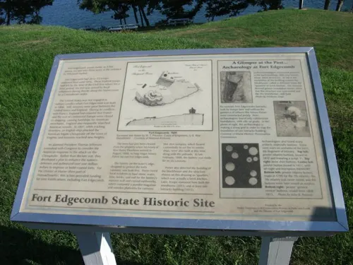

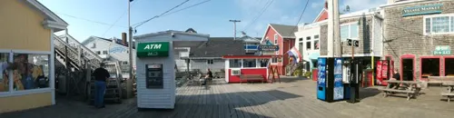

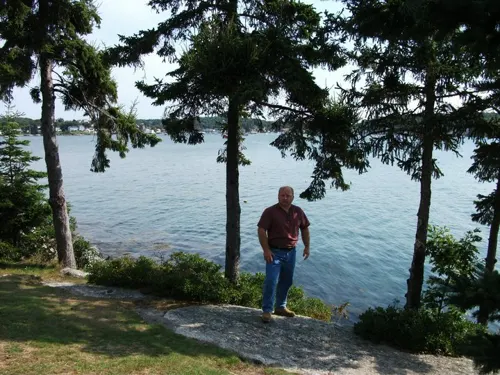

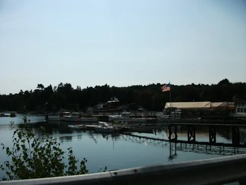

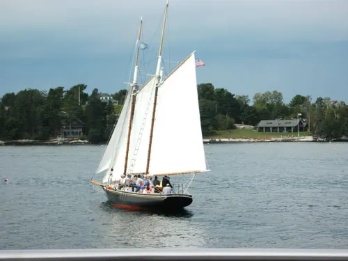

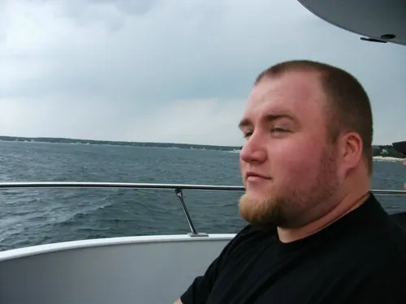

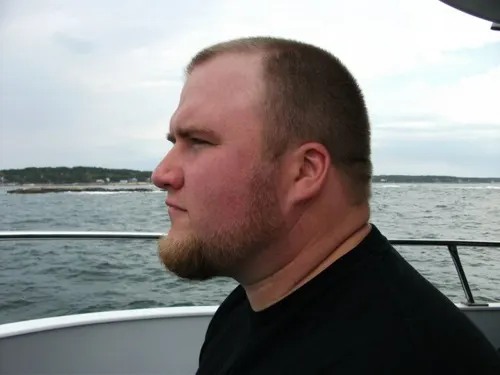

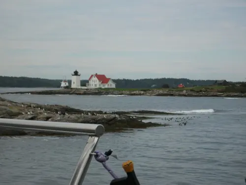

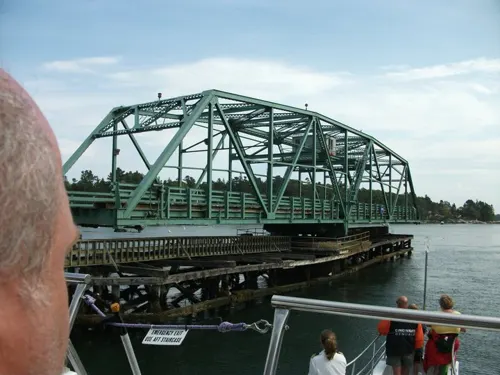

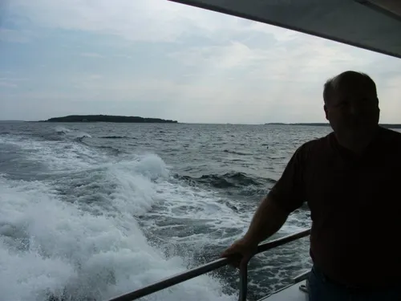